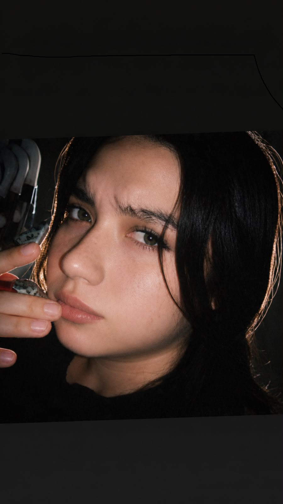
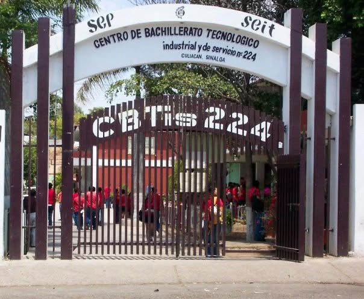
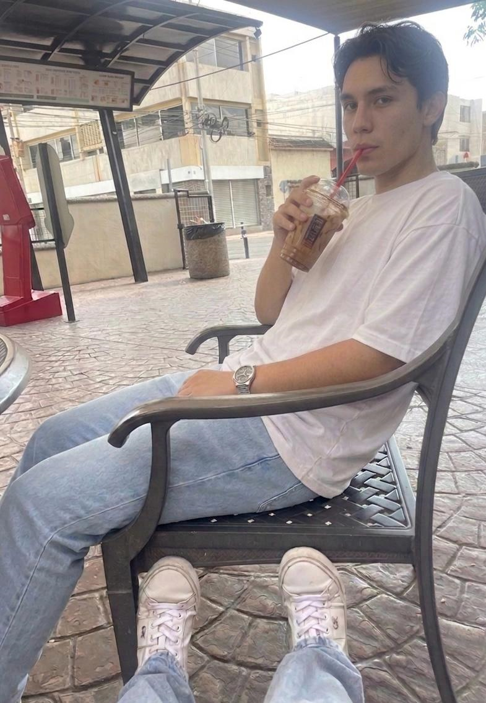
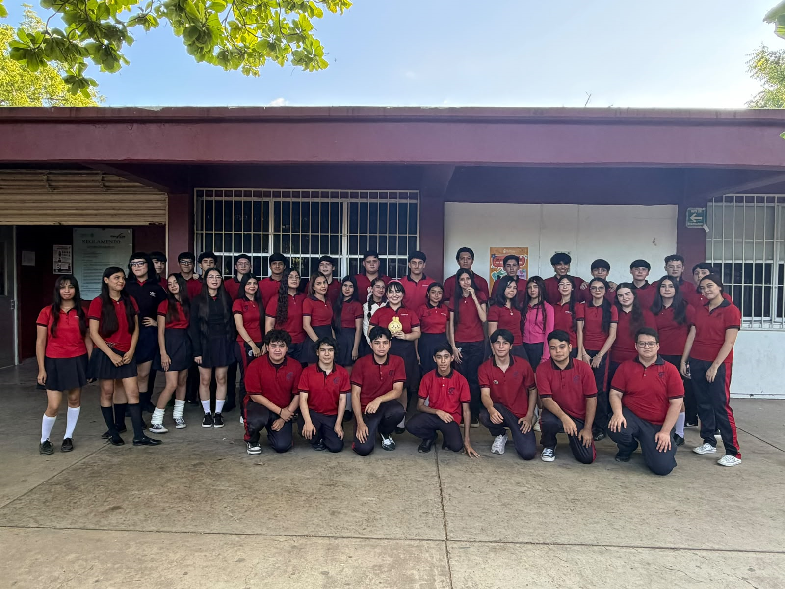
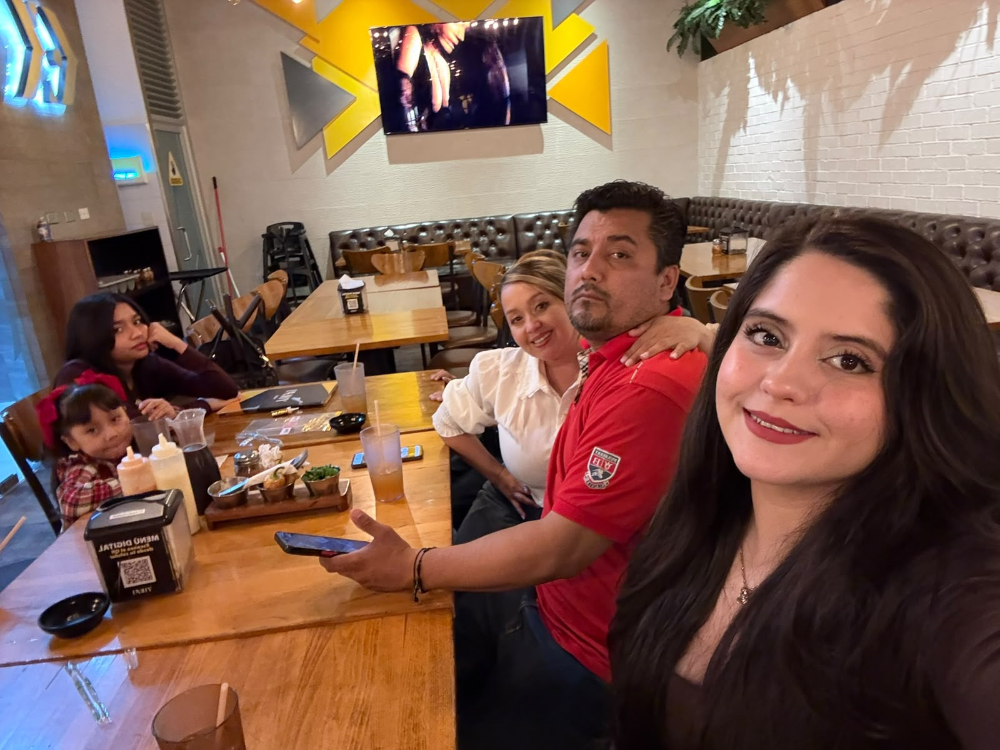

¡Bienvenidos a mi página! 💜

Hola, hadas panzonas Soy Katherine Andrea Abrajan Escobar y les quiero compartir un poquito sobre mí, mis gustos, mis pasatiempos, mis amigos y mi familia.En esta página encontrarán algunas de las cosas que forman parte de mi vida, las personas que quiero mucho y los momentos que hacen especiales mis días. También les contaré un poquito sobre mi escuela, las cosas que disfruto hacer y algunos recuerdos que guardo con cariño. Espero que les guste este pequeño espacio hecho con mucho amor y un toque de locura. ¡Bienvenidas a mi pagina! ♡
♡ Gracias por ver mi página ♡
🎓 ¿Dónde estudio?
Centro de Bachillerato Tecnológico industrial y de servicios No. 224

Estudio en el Centro de Bachillerato Tecnológico industrial y de servicios No. 224. Aquí aprendo cosas nuevas y me preparo para mi futuro.
Mi escuela:Centro de Bachillerato Tecnológico industrial y de servicios No. 224
🎧 Mis actividades extraescolares
En mi tiempo libre me gusta realizar actividades que me divierten, me relajan o me estresan jajaja.
- Jugar videojuegos
- Ver películas y series
- Pasar tiempo con mi familia
- Videos sobre como desarrolar videojuegos
- Pintar
Estos son algunos de mis pasatiempos favoritos.
👭 Mis amigos

Mis amigos son personas con los cuales comparto risas, momentos divertidos y chismes jajaja. Valoro mucho los chismes que me pasan nunca cambien hadas panzonas ♡.
♡ Mis mejores recuerdos ♡
Aquí puedo compartir mis anécdotas divertidas con mis hadas panzonas.
Mi grupo

Mi grupo forma parte de mi vida escolar. Con mis compañeros comparto clases y ya porque las hadas no socializamos mucho. .
Mi grupo:Mi grupo es divertido a veces y me gustaria salirme para ya no verlos aunque me caigan bien ♡.
🏡 Mi familia

Mi familia es muy importante en mi vida. Me brinda cariño, apoyo, chismes y motivación para cumplir mis sueños.
Todos son especial para mí y agradezco los momentos que compartimos juntos ♡.
♡ Mi familia es uno de mis tesoros más grandes. ♡
♡ Los Amo ♡